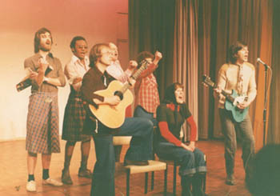
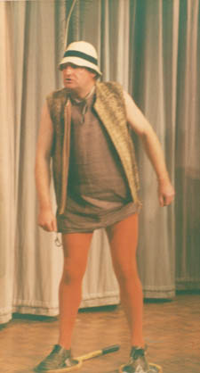

Chapter 8. And Afterwards At...
Tommy was a huge undertaking and it had been 12 months since our previous show... our funds were running low (as always). As luck would have it, in the fallow period after Demolition Man, various little projects had been planned as fundraisers. One of them was a one-hour show called 'And Afterwards At...' written by our very own Chris Hawley, Norman Partington, and Bill Johnson.
 This trio had always been the jokers in our pack and as fans of the Monty Python style of humour, quietly came up with what they described as a 'rude review'. It consisted of a number of short sketches. Mostly very funny, and with 80% of it really working, we expected it to go down well. The other 20% however was down to just how warped your individual tastes were!
Salford Players Theatre was duly booked for two nights Friday the 17th and Saturday the 18th March 1978.
At the time we thought it slightly risky, funny though it was, for much of it was trashy toilet humour. It practically invited the critics to dislike us for the first time. An ominous thought if ever there was one, as events proved.
I was the sole musician for the nights and wrote the tunes for lyrics which were... of a slightly different style to Chris Fogg's. 'Insanity' was an entire cast number that revelled in the delights of being nutty as a fruit cake. 'Slightly Loose Lady' gave our lead singer Alison Davis the chance to play a prostitute for a night(!) while 'Foot Fetish Blues' was about a man with a sexual perversion for feet! I also generally provided the background music for it all.
 Sketches included 'Shakespeare on Ice' a short collection of Shakespeare quotes being presented with the actors using the stage as if it were ice. To add to the absurdity they wore modern dusters and tennis rackets on their feet to enhance their manoeuvrability. The icing on the cake was that they didn't actually perform on ice, instead we used a shiny stage.
Another sketch was called Fart Rock..., which is enough about that! Finally we have the fabulous 'Bloody Flat Tyre' done in the manner of the Wings video for Mull of Kintyre. The lyrics had been substituted with our own funny and saucy version sung to the same tune... here is a sample:
"bloody flat tyre!
Oh pissed rolling back from the pub.
My desire.
Was thwarted once more,
By that bloody flat tyre."
It told the sad story of a drunken individual picking up a girl at the pub, planning to take her home to have his evil way with her... but his car tyre burst. Instant deflation! To this day I am completely unable to hear that song without putting our words to it. It improves it no end believe me!
Graham Brittain, Alison Davis, Chris Hawley, Alison Holden, Bill Johnson, Norman Partington, and Mike Shaft were the main culprits in the sketches. It is only fair to say that the audience laughed uproariously at most of it, but the critics oh they hated every single solitary moment. So we ended up with our first god-almighty, 1000%, stinky rotten review, as predicted.
It was a bit down market for us, but it achieved its goal and made us a bit of money for future events, and that was the important thing.